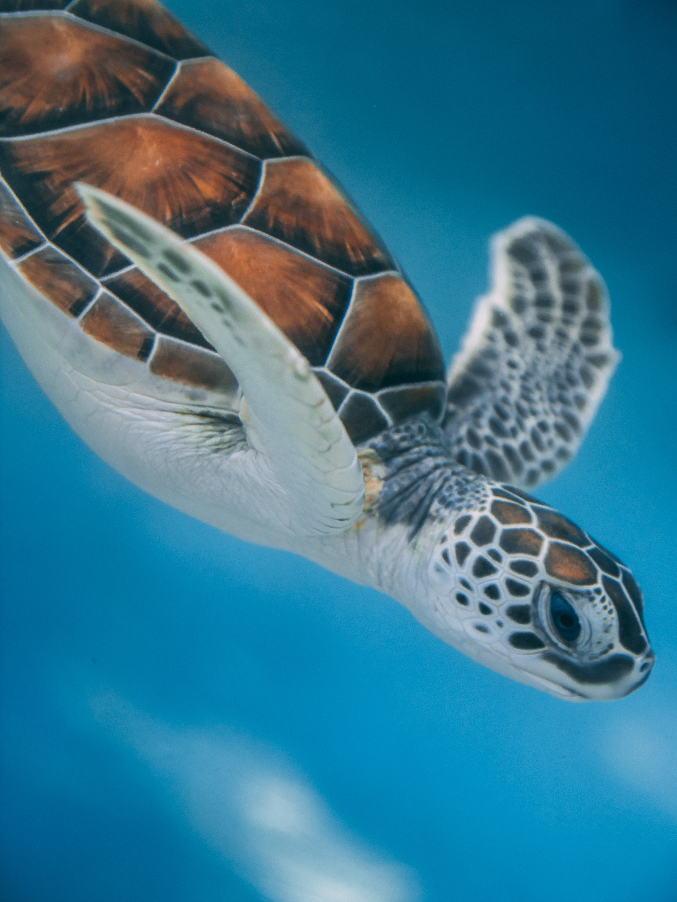

Save The Turtles 2020
Sea Turtles are one of the most endangered species in the sea and in the planet. The turtle population
has staggered because of overfishing(harvesting sea turtles for meat, eggs, leather and turtle shells)
in the 1970s. Sea turtles are now extremely endagered. Even though they are a protected species around
the world, they are still threatened by big amounts of sea pollution. Since they need clean water to
survive, places that have a high sea pollution rate are very dangerous for them, and unfortunately there are
a lot of places with rate. Plastic and different kinds of chemicals are ingested by turtles which causes
internal health issues. Join us in cleaning the beaches and educate people in how to lower sea pollution
so we can save this beautiful endangered species!
